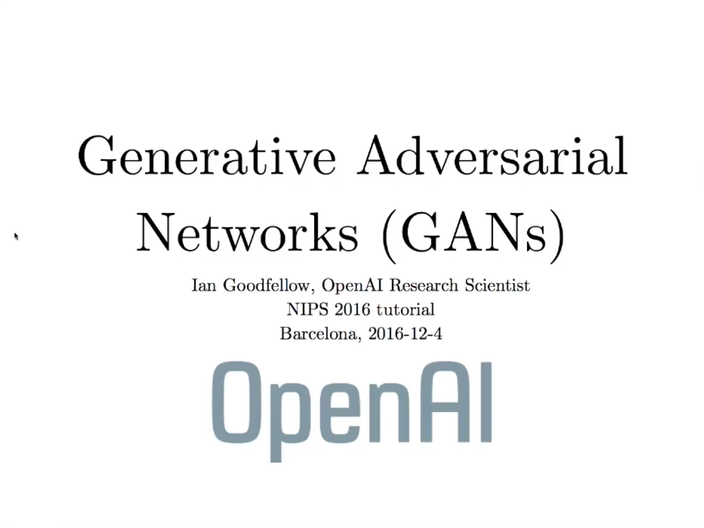

GAN (敵対的生成ネットワーク) チュートリアル @ NIPS 2016 まとめ - Ian Goodfellow
Posted on 2018-02-28(水) in Deep Learning
Ian Goodfellow による、GAN (Generative Adversarial Network; 敵対的生成ネットワーク) のチュートリアル。 Goodfellow 氏は GAN のそもそもの生みの親であり、教科書「Deep Learning」の著者としても有名。 ２時間と、とても長い盛りだくさんのチュートリアルだが、分かりやすく、具体例やコツなどの満載なので、とても参考になる。

-
生成モデリング
- 訓練データから確率分布の表現を得る
- 密度推定
- サンプル生成
- 訓練データから確率分布の表現を得る
-
なぜ生成モデルを研究するか
- これまでの機械学習 １つの入力に対して１つの出力
- 高次元確率分布は重要な対象
- 強化学習の未来、計画をシミュレーションできる
- 欠損値の扱い、半教師あり学習
- マルチモーダル出力
- 例：ビデオの次のフレームを予測
- 多くの可能性があるので、ぼやけた画像になってしまう
- 画像超解像技術
- iGAN → 人間が線画を書くだけで、写真クオリティの画像を生成
- 画像→画像翻訳 条件付きGAN
- 線画→写真、航空写真→地図
- 例：ビデオの次のフレームを予測
- よりリアルな生成タスク (画像、音声)
-
生成モデルの比較
- 最尤推定
- E[log p(x|Θ)] を最大化するΘを求める
- 他のほとんどのモデルは、どう最尤推定するかによって分類できる
- 尤度関数が明示的かどうか (p を 評価できるか)
- 密度が計算可能
- 密度を近似
- Variational autoencoder
- 変分近似
- 分布 q が完全の時だけ、元の分布と漸近一貫性がある
- 高い尤度を達成可能だが、サンプルの質が低い
- マルコフ連鎖 (ボルツマンマシン)
- エネルギー関数
- モンテカルロ法 異なるモードを扱えない 高次元でうまく行かない
- Variational autoencoder
-
密度関数が暗示的
-
GAN の要件
- 潜在コードを使う
- 漸近的に一貫性がある
- 訓練データが無限にあれば、真の分布を再現できる
- マルコフ連鎖を使わない
- 高クオリティのサンプル
- 最尤推定
-
GAN の仕組み
- 2つの「敵対的」なモデル
- 「生成モデル」G
- 実際にサンプルを生成
- 「識別モデル」D
- 訓練した後は不要
- サンプルを見て、それが本物か偽物かを判断
- 普通は、深層ニューラルネットで実装
- 「生成モデル」G
-
訓練
- 訓練データのサンプル x に対して1を出力
- ノイズ z からサンプル x ~ G(z) を生成
- D は、D(G(z)) を 0 にするように学習
- G は、D(G(z)) を 1 にするように学習
-
例え：偽札業者と警察
- 偽札業者は警察に見破られないように学習
- 警察は、偽札を見破るように（ただし、本物を偽札と判断しないように）学習
- 結果として、偽札がどんどん本物に近づく
-
生成モデル
- z (潜在変数) → x (観測変数)
- G(z; Θ)
- 微分可能であること以外に、特に条件が無い
- 訓練データを再現するためには、z の次元 > x の次元
- x 内の多用体だけを学習しないように
-
訓練の過程
- SGD 的な最適化アルゴリズム (Adam)を、以下の２つのミニバッチに対して走らせる
- 訓練データのミニバッチ
- 生成サンプルのミニバッチ
- 損失関数
- 生成モデルのコストは識別モデルの逆
- 単一の値を、識別モデルは最大化しようとし、生成モデルは最小化しようとする → Minimax Game
- 第1項：log D(x) の最大化, 第2項：log D(G(z)) の最小化
- 問題：D(x) の解は？
- D(x) = p_data(x) + (p_data(x) + p_model(x))
- 教師あり学習を使い、この比を求める
- SGD 的な最適化アルゴリズム (Adam)を、以下の２つのミニバッチに対して走らせる
-
質問：生成モデルがいつも同じ、リアルな画像を生成しないようにするにはどうすれば？
- Minimax ゲームがうまく動いていれば、D はそのような画像を偽物だと却下するはず
- 実際には、最適化が鞍点に収束することは稀 あまり多様性の無い画像ばかりが生成され、失敗することも
-
質問：GAN と VAE は似ている。どういう場合に使い分ければ？
- 尤度を最大化することだけを考えれば、VAE
- リアルなサンプルを生成するためには、GAN
-
質問：データからどうサンプルする？一様分布？
- 単純な方法：x と z 両方とも、一様にサンプリング
- Importance sampling が使えるかも
-
質問：生成されたサンプルに不自然な部分は現れないのか
- 現れる。Convolutional 生成モデルを使うと、チェッカー模様のようなものが現れる。
- MNISTの例：低レイヤーのパターンを見ると、高周波数成分を検出するフーリエ基底に似ている。それよりも、筆画などを検出・生成するモデルを学習したほうが効率的
-
質問：Negative sampling (例：word2vec) との関係は？
- ボルツマンマシンの negative phase
- GAN は、ほとんどが「negative」のフェーズ。例えるなら、大理石から像を彫る時、基本的にずっと石を削り続ける
-
訓練のバリエーション
- 各プレイヤーが、独立の損失関数
- 識別モデルの損失は、Minimax バージョンと同じ。生成モデルは、log D(G(z)) を最大化
- 識別モデルが非常に賢くなったとき、生成モデルの勾配が消える
- この損失関数をデフォルトで使うべき
-
DCGAN (deep convolutional GAN) アーキテクチャ
- どうやって高解像度の画像を生成するか
- 1 より大きい stride を使う
- バッチ正規化を使う（最後のレイヤー以外）
- リアルな寝室の画像
- 人の顔
- 潜在空間内での演算
- 例：メガネをした男性の顔 ー 男性の顔 ＋ 女性の顔 ＝ メガネをした女性の顔
- 言語モデルの (king - man + woman = queen) に似ている
-
ダイバージェンスは重要か？
- 最尤推定 → KLダイバージェンス D_KL(p|q) の最小化 モードが平均化されてしまう
- D_KL(q|p) → モデルが一つのモードを選ぶ （サンプルが無いところに確率値を与えない）
-
教科学習としてとらえる
- 生成モデルが報酬をもとに学習
- ただし、「環境」は固定ではなく識別モデル
-
生成モデルの損失関数の比較
- "non-saturating heuristics" → 識別モデルの値が 0 (偽物を正しく偽物と判断している状態)でも勾配が0ではない
- 最尤推定コスト → 識別モデルの値が 1 に近づくにつれ、指数関数的に大きくなる → ミニバッチ内でもっともリアルなサンプルに大きく影響されてしまう
- GAN のサンプルがリアルなのは、損失関数というよりは、教師あり学習を使った近似戦略によるところが大きい
- VAE の場合は、同心円ガウシアン分布で近似 GAN は、そのような制約がない（共分散行列が対角でなくても良い）
-
NCE (noise contrastive estimation), MLE との比較
- NCE は、D として、明示的な（パラメータ化された）近似を学習する
- ノイズはガウス分布から生成（生成モデルを学習しない）
- 質問 (Jürgen Schmidhuber): predictability minimization (1992) との関係は？同じアイデアでは？
- NIPS の論文に書いたのでそちらを参照。
- 公共の場でこのように対決するのはあまり望まない
- NCE は、predictability minimization よりも GAN に似てる (笑)
- NCE は、学習が識別モデルで起こる。GAN は生成モデルで起こる
- 2つの「敵対的」なモデル
-
GAN を使う上でのコツ
-
ラベルは役に立つ
- 条件付き GAN p(x) を学習するより p(y|x) を学習した方が良いサンプルが作れる
- p(x, y) を学習するだけでも、 p(x) よりも良い
-
片側ラベルスムージング
- データのクロスエントロピーを計算するときに、ソフトな値 (0.9) を出力
- 「間違い確率」をモデル化 データの中に誤り・ノイズが混入
- 負ラベルに対してスムージングしないこと！
- 正規化として使える
- Weight decay と違って、精度を犠牲にしない（単に確信度を下げるだけ）
-
バッチ正規化
- 素性のバッチ内の平均を引き、標準偏差で割る
- バッチ内での相関を引き起こす
- 参照バッチ → この参照バッチにおける平均と標準偏差をいつも使う
- ただし、参照バッチに対して過学習する
- → 仮想バッチ 参照バッチに正規化したいサンプル x を加えたバッチを「参照」として使う
-
G と D のバランス
- 普通は、識別モデルが勝つ
- 識別モデルモデルが強すぎて生成モデルが学習しない時
- 誤：識別モデルを弱くする
- 正：スムージングや、non-saturating heuristics を使う
- 識別モデルをより頻繁に更新する（いつも上手くいくとは限らない）
-
-
研究のフロンティア
-
非収束問題
- GAN は、収束の十分条件を満たさない
- 収束そのものが目的ではない
- 密度関数の凸性を使い、関数を直接最適化できれば、GAN の収束性を保証できる
-
質問：ビデオに対する GAN (VGAN) 重複したサンプルを生成しないような保証があるか？
- 起きないという保証はない
- 生成モデルは一度も訓練データを見ることがない。識別モデルの勾配を通じて学習するだけ
-
質問：生の入力より、何らかの疎な表現 (基底や辞書) を学習した方が良いのでは？
- 深層学習としては、素性エンジニアリングはなるべく避けたい
- 出力層の pre-training
-
質問：GAN を使って訓練データを増やし、他のタスクの入力とする？
- 自分の前のインターンが似たことをやっていた
- GAN を使って合成データを生成し、そこから分類器を学習
- 本当のテストセットに適用
-
モード崩壊
- 生成モデルが、単一のモードしか生成しなくなってしまう
- 逆 KL 損失関数のせいではない
- 出力サンプルに多様性が無くなる。キャプションからの画像生成等では通常問題ない
- ミニバッチ素性
-
サンプルの問題
- 畳み込み（個数に関する制約がない） → 頭が２つある犬
- 長距離の依存性に関する問題 → 目のサイズが違う、足のない犬
-
Unrolled GAN
- 識別モデルの k ステップを遡って、誤差逆伝播
-
評価
- サンプルの良さを定量化する方法が無い
-
離散的な出力
- 微分可能の条件 → 単語や文字を出力できない
- REINFORCE
- 埋め込みに変換するモデルを学習し、GAN を学習
-
教師あり識別モデル
- 本物・偽物 の代わり→ 本物の犬・本物の猫・偽物に分類
-
コードを解釈可能にする
-
強化学習とのつながり
-
ゲーム、セキュリティへの適用
-
質問：損失関数が微分可能でない時は？
- 上の「離散的な出力」を参照
-
質問：モードを捉えることが得意。画像サイズが大きくなった場合、モードが指数関数的に増える
- ただ、大きなモデルは指数関数的に多くのモードを捉えられる。
- 例：解像度を上げると、動物の毛皮が見えるが、画像全体に渡って繰り返されるだけ
- GAN と他のモデルとの組み合わせ
- PPGN の紹介
-
-
まとめ
- 教師あり学習を使い、扱いにくい損失関数を近似
- 最尤推定に使われるものも含む、多くの損失関数を近似できる
- 重要な研究課題：どうやってナッシュ均衡を探すか
- 高画質画像生成の重要な要素
| 英語 | 日本語 |
|---|---|
| mode | 最頻値（ここでは、単にサンプルの密度が高い部分） |
| contrast | 対比する |
| tractable | 扱いやすい |
| semi-supervised | 半教師あり |
| chain rule | 連鎖律 |
| asymptotically | 漸近的に |
| differentiable | 微分可能な |
| counterfeit | 偽物、偽造 |
| manifold | 多様体 |
| artifact | 人為的な結果、不自然さ |
| advocate | 提唱する |
| probability mass | 確率質量 |
| saturate | 飽和する（値がそれ以上変化しないこと） |
| equilibrium | 均衡 |
| oscillation | 振動 |
| workaround | 回避方法 |